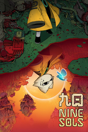

Nine_Sols_
Detalles
|  | |
| Tiempo de juego | No Jugado |
| Última actividad | Nunca |
| Añadido | 11/6/2024 14:41:31 |
| Modificado | 11/8/2024 17:33:51 |
| Estado de finalización | No Jugado |
| Librería | Playnite |
| Fuente | 6TB STORE |
| Plataforma | PC (Windows) |
| Fecha de lanzamiento | 5/28/2024 |
| Puntuación de la Comunidad | 93 |
| Puntuación de la Crítica | |
| Puntuación de usuario | |
| Género | Acción Aventura Indie |
| Desarrollador | RedCandleGames |
| Editor | RedCandleGames |
| Característica | Cloud Saves Compat. Total Con Mando Logros De Préstamo Familiar Tablas De Clasificación De Un Jugador |
| Enlaces | Punto de encuentro Discusiones Guías Noticias Página de la tienda PCGamingWiki Logros |
| Tag | 2D Acción Acción y aventura Ambientales Artes marciales Aventura Buena trama Ciencia ficción Cómics Dibujados a mano Difíciles Fantasía oscura Gatos Indie Metroidvania Mitología Plataformas Sangriento Tipo «Dark Souls» Un jugador |
Descripción
Nine Sols is a lore rich, hand-drawn 2D action-platformer featuring Sekiro-inspired deflection focused combat. Embark on a journey of Asian fantasy, explore the land once home to an ancient alien race, and follow a vengeful hero’s quest to slay the 9 Sols, formidable rulers of this forsaken realm.
In New Kunlun, hero Yi has awakened the 9 rulers of this forsaken realm. To defeat the 9 Sols in the deserted city.
“Becomes one with the way of Tao…”
New Kunlun, the Solarian’s last sanctuary, has remained quiet for centuries. Inside this vast realm, the ancient gods left mortals with a promised land that is forever protected by the sacred rituals, yet the truth of this world remains unknown to most. Everything changes when Yi, a long forgotten hero from the past, is awoken by a human child.
Follow Yi on his vengeful quest against the 9 Sols, formidable rulers of this forsaken realm, and obliterate any obstacles blocking your way in Sekiro-lite style combat. Explore in unique “Taopunk” setting that blends cyberpunk elements with Taoism and far eastern mythology. Unravel the mysteries of an ancient alien race and learn about the fate of mankind.

2D Sekiro-lite Combat: Slash, deflect, charge into enemies and blow them up with the Taoist talisman! Each fight combines fast, brutal action sequences with classic platforming mechanics.


Intriguing Boss Fight: Ready yourself to fight the vicious ancient guardians and gruesome creatures. Be patient and utilize every move in your arsenal, mix up with Yi’s godly bow to defeat these larger than life figures.

Taopunk Setting: When cyberpunk clashes with Taoism, melding sci-fi elements with eastern mythology/fantasy, the experimental genre of Taopunk was born.
Exploration: Traverse in the interconnected regions of New Kunlun. Discover secrets, piece together the story behind Yi’s revenge.

Aids from inhabitants: Meet interesting NPCs of this world and interact with them to receive upgrades, gain new abilities, and discover useful technology.
Hand-drawn Environments/Animations and Manga: Nine Sols is filled with meticulous hand-crafted, anime style landscapes, sprite based hand-drawn animations, blending with Japanese manga inspired cutscenes.

From the creators of award-winning psychological horror games Detention and Devotion, comes Red Candle Game’s latest title Nine Sols. The studio aims to deliver a stylized action platformer that’s cohesive and complementary to its lore-rich narrative. It’s an ongoing, most ambitious project from this indie studio.
Story
In New Kunlun, hero Yi has awakened the 9 rulers of this forsaken realm. To defeat the 9 Sols in the deserted city.
“Becomes one with the way of Tao…”
New Kunlun, the Solarian’s last sanctuary, has remained quiet for centuries. Inside this vast realm, the ancient gods left mortals with a promised land that is forever protected by the sacred rituals, yet the truth of this world remains unknown to most. Everything changes when Yi, a long forgotten hero from the past, is awoken by a human child.
Follow Yi on his vengeful quest against the 9 Sols, formidable rulers of this forsaken realm, and obliterate any obstacles blocking your way in Sekiro-lite style combat. Explore in unique “Taopunk” setting that blends cyberpunk elements with Taoism and far eastern mythology. Unravel the mysteries of an ancient alien race and learn about the fate of mankind.
Features
2D Sekiro-lite Combat: Slash, deflect, charge into enemies and blow them up with the Taoist talisman! Each fight combines fast, brutal action sequences with classic platforming mechanics.
Intriguing Boss Fight: Ready yourself to fight the vicious ancient guardians and gruesome creatures. Be patient and utilize every move in your arsenal, mix up with Yi’s godly bow to defeat these larger than life figures.
Taopunk Setting: When cyberpunk clashes with Taoism, melding sci-fi elements with eastern mythology/fantasy, the experimental genre of Taopunk was born.
Exploration: Traverse in the interconnected regions of New Kunlun. Discover secrets, piece together the story behind Yi’s revenge.
Aids from inhabitants: Meet interesting NPCs of this world and interact with them to receive upgrades, gain new abilities, and discover useful technology.
Hand-drawn Environments/Animations and Manga: Nine Sols is filled with meticulous hand-crafted, anime style landscapes, sprite based hand-drawn animations, blending with Japanese manga inspired cutscenes.
Red Candle Games
From the creators of award-winning psychological horror games Detention and Devotion, comes Red Candle Game’s latest title Nine Sols. The studio aims to deliver a stylized action platformer that’s cohesive and complementary to its lore-rich narrative. It’s an ongoing, most ambitious project from this indie studio.